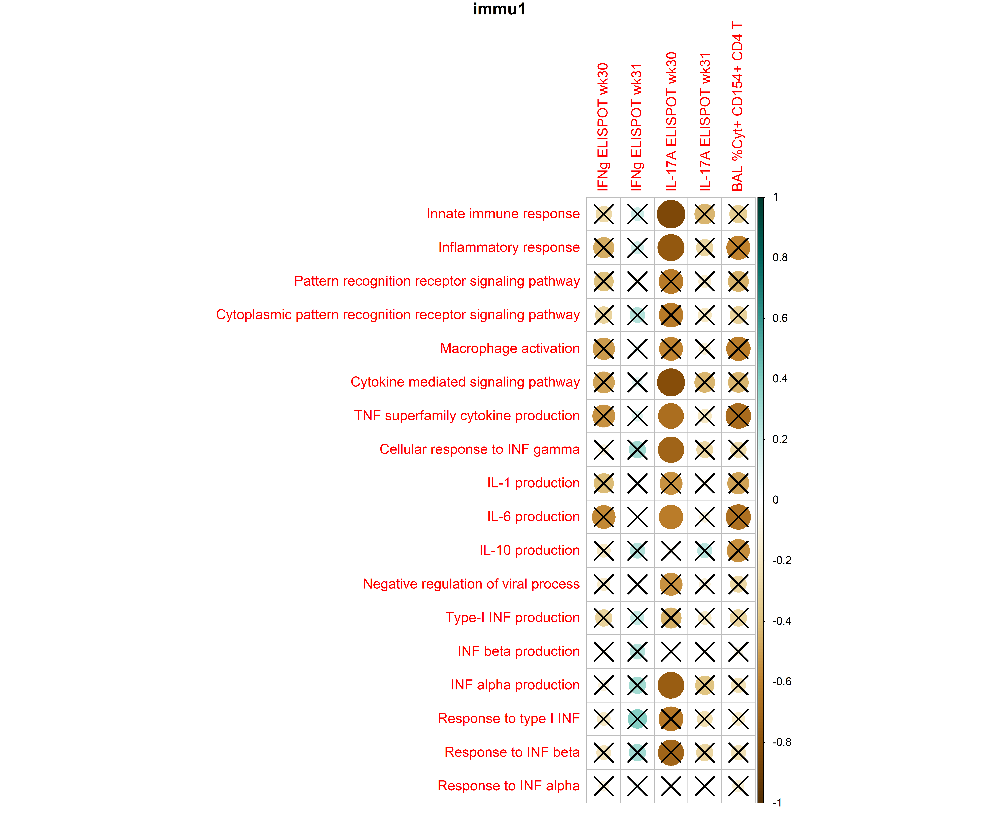
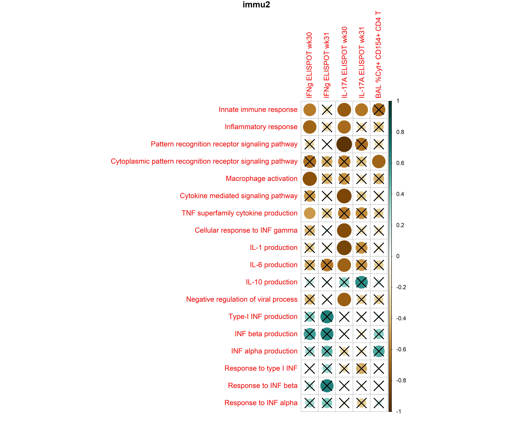

library(dplyr)
library(SummarizedExperiment)
library(GSVA)
library(tidyr)
library(stringr)
library(purrr)Correlation w. late response
Set up
Load gene expression data
se <- readr::read_rds("../data/se_pcoding_scale_abundant_filtS.rds")Calulate GSVA scores
GSVA scores were calculated for each sample using the gene sets from the Molecular Signatures Database (MSigDB).
count_matrix <-
se %>% assay(3) %>% as.matrix() # log2-transformed normalized counts
count_matrix <- log2(count_matrix + 1)gs <-
tibble(gs_name = c("CP:REACTOME",
"GO:BP",
"GO:MF")) %>%
mutate(gs_list = purrr::map(gs_name, function(subcat){
gs_df <- msigdbr::msigdbr(species = "Homo sapiens",
subcategory = subcat) %>%
group_by(gs_name) %>% tidyr::nest() %>%
mutate(gene_id = purrr::map(data, ~ .x %>% pull(gene_symbol))) %>% select(-data)
gs_list <- gs_df$gene_id
names(gs_list) <- gs_df$gs_name
return(gs_list)
}))
gs_GOBP <- gs$gs_list[[2]]pathway_score <- gsva(
count_matrix, gs_GOBP, verbose=FALSE
)pathway_list <-
readxl::read_excel("../data/gene_set.xlsx") %>%
dplyr::rename(pathway = GO_term) %>%
mutate(pathway_display = factor(pathway_display,
levels = rev(pathway_display)),
theme = factor(theme, levels = c("Innate response",
"Cytokine",
"Type I IFN"),
labels = c("Innate~~response",
"Cytokine",
"Type~~I~~IFN")))
pathway_score_selected <-
pathway_score[pathway_list$pathway, ] %>% t() %>%
as_tibble(rownames = "sample_name") %>%
mutate(animal = sample_name %>% str_extract("[:alnum:]{6}"),
sample_date = sample_name %>% str_extract("[:digit:]{4}\\.[:digit:]{2}\\.[:digit:]{2}")) %>%
left_join(colData(se) %>% as_tibble() %>% select(animal:timepoint),
by = c("animal", "sample_date")) %>%
select(!contains("GOBP"), contains("GOBP"))# calculate the baseline score (for filling the missing values)
pathway_score_baseline <-
pathway_score_selected %>%
filter(timepoint == "pre") %>%
select(contains("GOBP"))
pathway_score_baseline_mean <- colMeans(pathway_score_baseline)
# add missing values with imputed
pathway_score_selected_addmissing <-
pathway_score_selected %>%
bind_rows(
tibble(sample_name = c("CGB097.2019.06.24", "CGB065.2019.06.24"),
animal = c("CGB097", "CGB065"),
sample_date = c("2019.06.24", "2019.06.24"),
vacc = c("H107_CAF04_CpG", "H107_CAF09c"),
timepoint = c("pre", "pre")) %>%
bind_cols(pathway_score_baseline_mean %>% as.data.frame() %>% t())
)
pathway_score_selected_addmissing_baseline_corr <- # baseline correction
pathway_score_selected_addmissing %>%
arrange(animal, sample_date) %>%
group_by(animal) %>%
nest() %>%
mutate(data_baseline_corr = map(data, function(x){
GOBP_index <- x %>% colnames() %>% str_detect("GOBP") %>% which()
x_baseline_corr <-
bind_rows(x[2, GOBP_index] - x[1, GOBP_index],
x[3, GOBP_index] - x[1, GOBP_index])
x_baseline_corr_meta <-
x[2:3, -GOBP_index] %>%
bind_cols(x_baseline_corr)
return(x_baseline_corr_meta)
})) %>%
select(-data) %>%
unnest(data_baseline_corr)Load late response data
late_response <-
readxl::read_xlsx("../data/Late_response_parameters.xlsx") %>%
mutate(across(contains(c("ELISPOT", "BAL")), as.numeric))Warning: There were 5 warnings in `mutate()`.
The first warning was:
ℹ In argument: `across(contains(c("ELISPOT", "BAL")), as.numeric)`.
Caused by warning:
! NAs introduced by coercion
ℹ Run `dplyr::last_dplyr_warnings()` to see the 4 remaining warnings.late_response_meta <-
pathway_score_selected_addmissing_baseline_corr %>%
left_join(late_response, by = c("animal" = "NHP Name")) %>%
ungroup()Calculate correlation
corr_plot <-
late_response_meta %>%
group_by(timepoint) %>%
nest() %>%
mutate(
corr = map(data, function(x){
t <- x %>% dplyr::select(contains(c("GOBP", "ELISPOT", "BAL")))
colnames(t) <- colnames(t) %>% str_remove("GOBP_") %>% str_replace("INTERLEUKIN_", "IL")
m <- t %>% as.matrix()
cor_coefficient <- cor(m, use= "complete.obs", method = "spearman")
cor_coefficient <- cor_coefficient[1:18, 19:23]
rownames(cor_coefficient) <- pathway_list$pathway_display
colnames(cor_coefficient) <-
colnames(cor_coefficient) %>%
str_replace_all("_", " ")
p_mat <- corrplot::cor.mtest(m, method = "spearman")
p_mat <- p_mat$p[1:18, 19:23]
result <- list(p_mat = p_mat, cor_coefficient = cor_coefficient)
return(result)
}),
plot = pmap(list(timepoint, corr),
function(x2, x3){
fn <- paste0("../data/figure/", x2, ".png")
png(width = 12, height = 10, units = "in", file = fn, res = 600)
corrplot::corrplot(x3[["cor_coefficient"]],
title = paste(x2),
mar = c(1, 1, 1, 1),
# col=colorRampPalette(c("blue","white","red"))(200),
col = corrplot::COL2("BrBG"),
cl.align.text = "l",
# cl.pos = "b",
# cl.length = 15,
p.mat = x3[["p_mat"]]
)
dev.off()
}))Correlation plot
The first immunization

The second immunization
